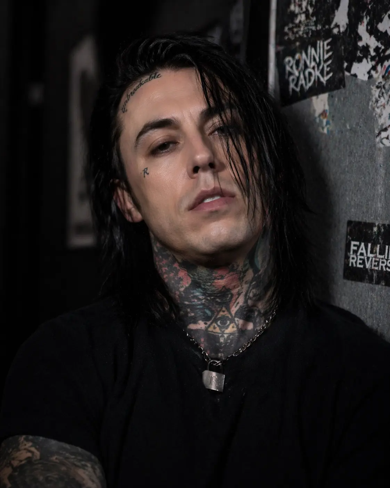

Ronnie Radke, nacido el 15 de diciembre de 1983 en Las Vegas, Nevada, es un cantante, compositor y músico estadounidense reconocido por su estilo versátil y su fuerte presencia escénica.
Saltó a la fama como vocalista de Escape the Fate, banda con la que lanzó el exitoso álbum "Dying Is Your Latest Fashion". Tras una etapa complicada en su vida personal, Ronnie regresó a la música fundando Falling in Reverse, proyecto con el que consolidó su carrera y exploró nuevos sonidos que combinan rock, rap y electrónica.
A lo largo de los años, Radke ha sido tanto admirado como polémico, pero su impacto en la industria musical es innegable, destacándose por su autenticidad y constante reinvención.

IG